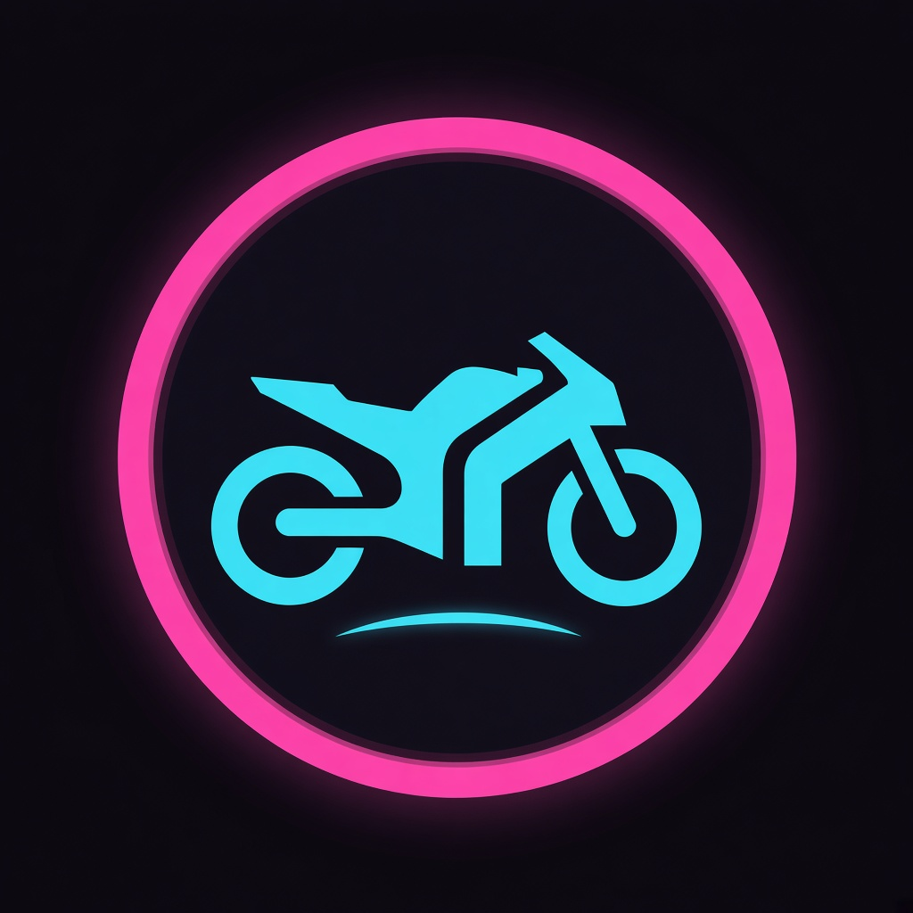
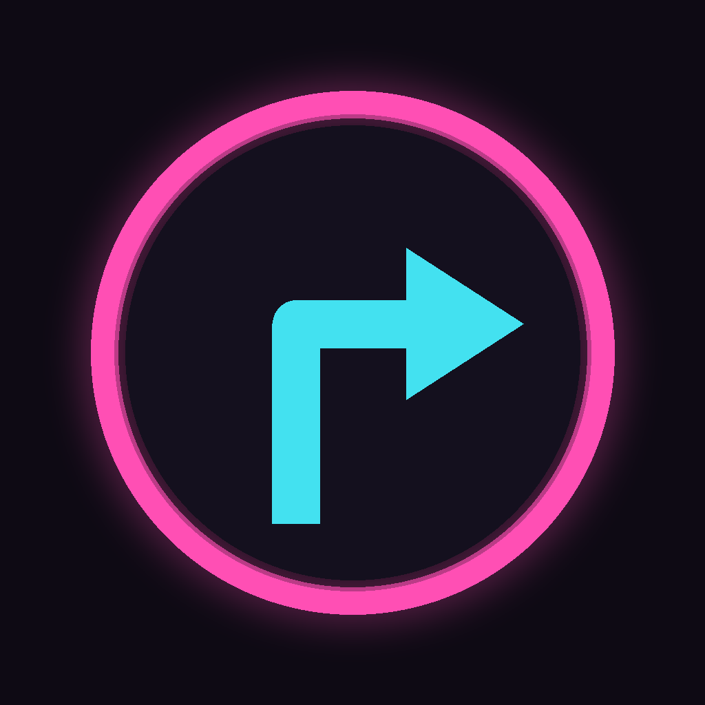
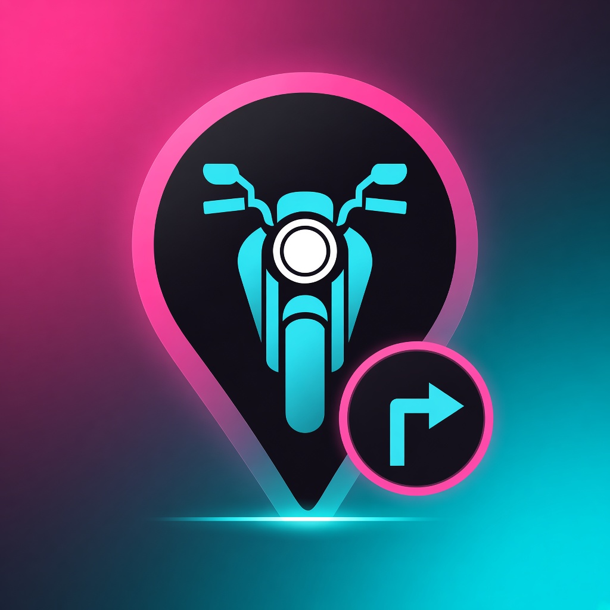
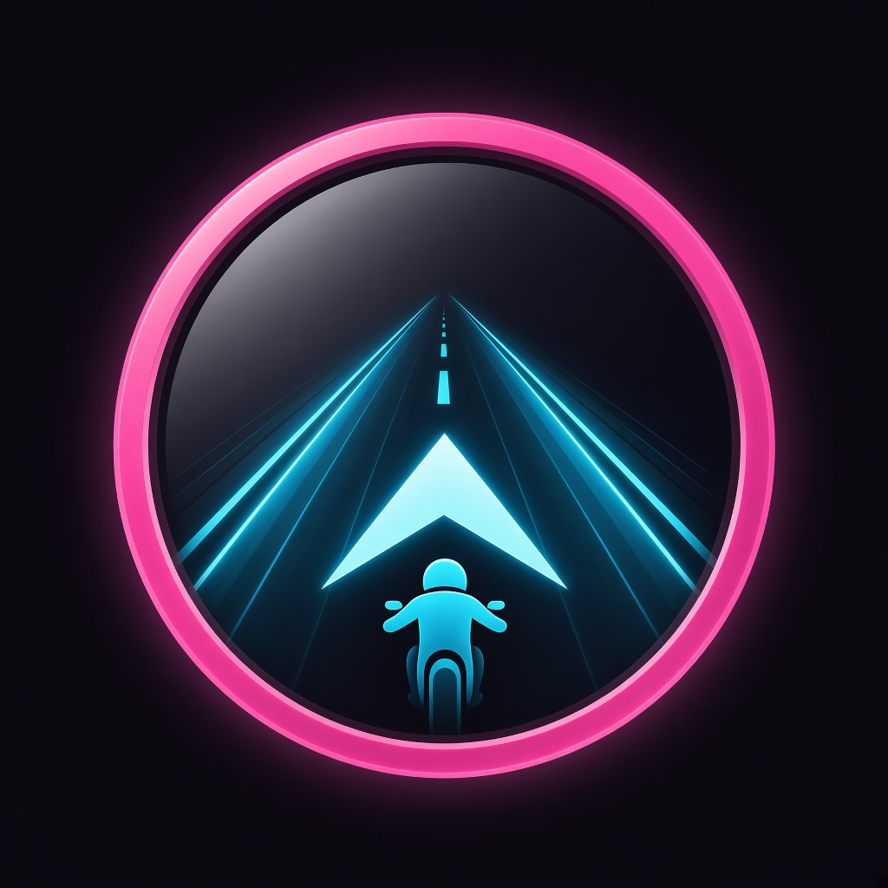

方案 A
圆屏仪表 · 摩托侧影

粉环即圆屏表圈，中心摩托侧影 + 轻微弧线路面。最近现行图标，辨识升级成本最低。
- 参照：Apple Maps 深度感 + 仪表盘隐喻
- 优点：小尺寸清晰、延续品牌环
- 风险：仍偏侧影，导航动作略弱
相对现行「粉环 + 青箭头」，三套都强化摩托导航身份，并用圆形表盘 / 圆徽章表达圆屏配套特性。品牌色仍为粉 #E5219F × 青 #0E97AC。

粉环 + 右转箭头。圆屏暗示有，但缺少摩托语义，箭头过于通用。

粉环即圆屏表圈，中心摩托侧影 + 轻微弧线路面。最近现行图标，辨识升级成本最低。

行业通用定位针语言；针内摩托正视 + 右下圆屏小徽章（箭头）。导航软件一眼可懂。

粉环圆屏 HUD 内：透视公路 + 前进箭头 + 骑手剪影。叙事最强，像真正的圆屏导航画面。
仅方案预览，尚未替换 AppIcon。选定后可导出 1024×1024 并写入 Assets.xcassets。已脱敏，无账号 / Key。